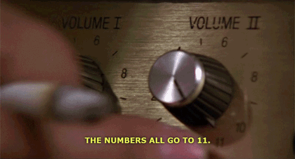

This course, along with the previous two course, has focused the basic vocabulary of harmony in a tonal system.
Harmony is a rich and complex facet of music, and there are many extensions and variations to the basic vocabulary.
Today, we will look a few common variations of harmony that will demonstrate some of the possibilities available to us.
We can replace the fifth of a Dominant triad with a sixth
So if we start with a C major triad...
...we substitute the G with an A.
Let's now look at how this came about.
You will notice that the V(subs 6th) has the same exact pitches as a iii6 chord.
So, why do we call it a V chord?
Because it is functioning like a Dominant chord.
We can also subsitute the fifth for a sixth in a V7 chord.
Just as superimposed 3rds produce triads and seventh chords, continuation of that process yields ninth, eleventh, and thirteenth chords.
Thirteenth (C13 = A)
Eleventh (C13 = F)
Ninth (C13 = D)
Seventh (C13 = B♭)
Fifth (C13 = G)
Third (C13 = E)
Root (C13 = C)
Krystian Zimerman (piano), Kaja Danczowska (violin)